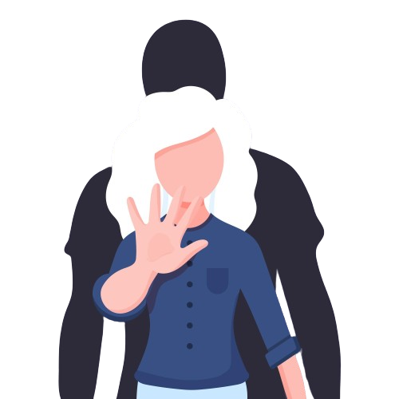
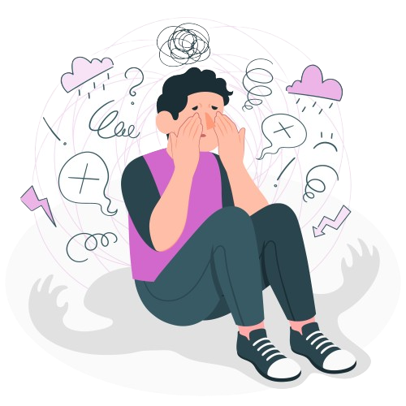
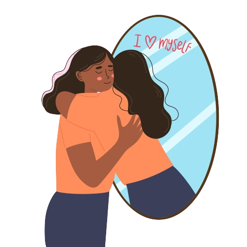
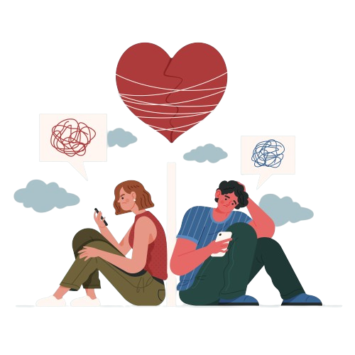
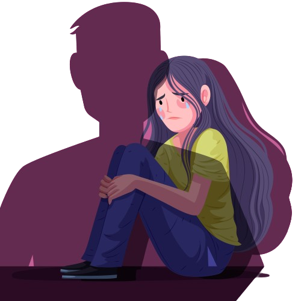

¿Necesitas ayuda emocional?
A veces puede ser difícil enfrentar los desafíos emocionales por nuestra cuenta. ¿Has considerado alguna vez hablar con un profesional de la salud mental? Sé que puede sonar un poco abrumador pero tu bienestar es importante, y estamos aquí para apoyarte en tu camino.
Recuerda, pedir ayuda no significa que eres débil. Al contrario, muestra que eres fuerte y valiente.
¡Comienza tu viaje hacia el bienestar hoy mismo!
¿Quiénes somos?
Imagina una plataforma donde puedes acceder a terapia en línea con profesionales experimentados a precios accesibles. Ya sea que busques ayuda para superar desafíos personales o simplemente quieras hablar con alguien, ¡somos tu mejor opción! También ofrecemos sesiones con pasantes de forma mas económica para aquellos que prefieren esa opción. Nuestra página es amigable, fácil de usar y estamos aquí para apoyarte en tu viaje hacia el bienestar emocional. ¡Bienvenido a tu espacio seguro para crecer y sanar!
Padecimientos
Abuso sexual
Es cualquier acto sexual no deseado o forzado. La terapia brinda un espacio seguro para procesar el trauma, reconstruir la autoestima y aprender a manejar los efectos psicológicos del abuso.
Ansiedad
Es una respuesta natural del cuerpo ante el estrés o peligro percibido, pero cuando se vuelve excesiva o persistente, puede afectar la vida diaria. La terapia identifica y abordar los pensamientos y comportamientos que la alimentan, enseña técnicas de manejo del estrés y promueve el bienestar emocional a largo plazo.
Autoestima
La terapia puede ayudar en el fortalecimiento de la autoestima al proporcionar un espacio seguro para explorar pensamientos y emociones. Además, brinda apoyo emocional, herramientas prácticas y técnicas de afrontamiento para promover una mayor confianza en uno mismo y una percepción más saludable de uno mismo
Depresión
La depresión es un trastorno que afecta el estado de ánimo y la terapia ayuda al brindar apoyo emocional, herramientas para manejar el estrés y cambiar patrones de pensamiento negativos, promoviendo así una mejora en el estado de ánimo y la calidad de vida.
Dependencia emocional
La dependencia emocional es una necesidad excesiva de atención, validación y afecto de los demás, a menudo vinculada a baja autoestima y miedo al abandono. La terapia ayuda al abordar las creencias subyacentes, promoviendo la autonomía emocional
Violencia intrafamiliar
La violencia intrafamiliar puede tener efectos como daño físico y psicológico, problemas en relaciones y salud, y ciclo de violencia. La terapia ofrece apoyo emocional, enseña habilidades de afrontamiento, mejora relaciones, trata trastornos mentales y previene el ciclo de violencia.
Preguntas frecuentes
¿Cómo funciona la terapia online?
La terapia en línea generalmente se lleva a cabo a través de plataformas de videoconferencia seguras y confidenciales. Las sesiones son similares a las sesiones presenciales, pero se llevan a cabo en línea desde la comodidad de tu hogar o cualquier otro lugar con acceso a internet a través de una computadora, celular o tablet.
¿Qué tipo de terapia en línea ofrecen los terapeutas?
Los terapeutas en línea pueden ofrecer una variedad de enfoques terapéuticos, que van desde terapia cognitivo-conductual hasta terapia de pareja o terapia familiar. celular o tablet.
¿Qué sucede si tengo dificultades técnicas durante una sesión en línea?
Los terapeutas en línea suelen tener un plan de respaldo en caso de dificultades técnicas. Esto puede incluir cambiar a una plataforma de videoconferencia alternativa o continuar la sesión por teléfono si es necesario.
¿Cómo se protege mi privacidad durante las sesiones?
Los terapeutas en línea utilizan plataformas seguras y confidenciales. Estas plataformas suelen utilizar cifrado de extremo a extremo para proteger la privacidad y confidencialidad de los clientes. Además la terapia es confidencial para crear un ambiente seguro donde los pacientes puedan compartir sus pensamientos y sentimientos sin temor a ser juzgados o que su información sea divulgada sin su consentimiento, ya que esta respaldada por normas éticas y legales que protegen la privacidad del paciente, a menos que exista un riesgo inminente para la seguridad del paciente o de otros.
¿Cuánto cuesta la terapia online?
Sabemos que a menudo, el costo de la terapia puede ser un obstáculo. Es por eso que hemos ajustado nuestros precios para hacerlos más accesibles, especialmente con nuestros pasantes, lo que te permite dar el primer paso hacia tu bienestar a un precio más económico. Queremos ser transparentes contigo, por lo que no ofrecemos sesiones gratuitas debido a nuestros precios.
¿Cuanto tiempo necesitare terapia?
Nuestras sesiones duran aproximadamente 50 minutos cada semana, pero dependiendo de tus necesidades, tu especialista puede recomendarte más sesiones si es necesario. Estarán contigo en cada paso del proceso para asegurarse de que recibas la atención que mereces.